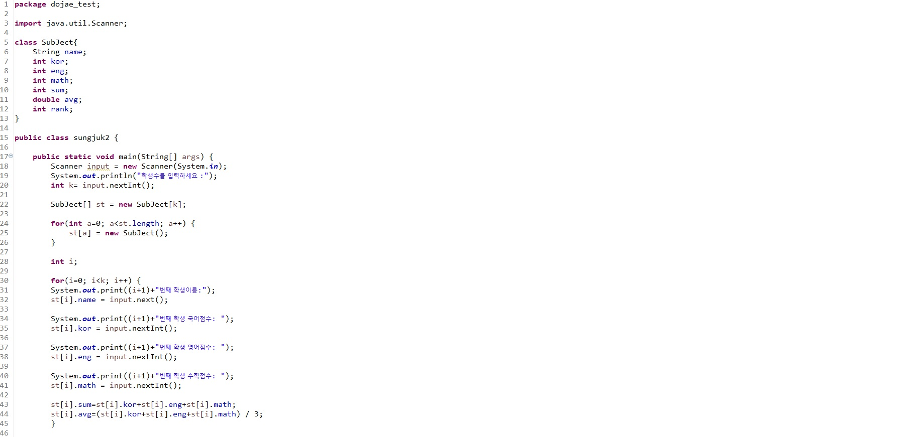
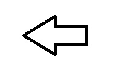
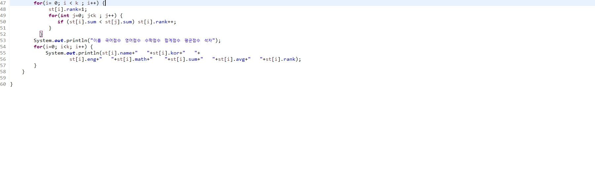

Java언어는
썬 마이크로시스템즈의 제임스 고슬링(James Gosling)과
다른 연구원들이 개발한 객체 지향적 프로그래밍 언어입니다. Java언어로 개발된
프로그램은 소스 파일을 다시 수정하지 않아도, 자바 실행환경(JRE: Java Runtime Environment)
이 설치되어 있는 모든 운영체제에서 실행이 가능하다는 점이 있습니다.
C언어의 기초과정을 배우고 2학년 1학기부터 지금까지 자바를 중심적으로 배워왔습니다.
성적프로그램을 만든 코드입니다

